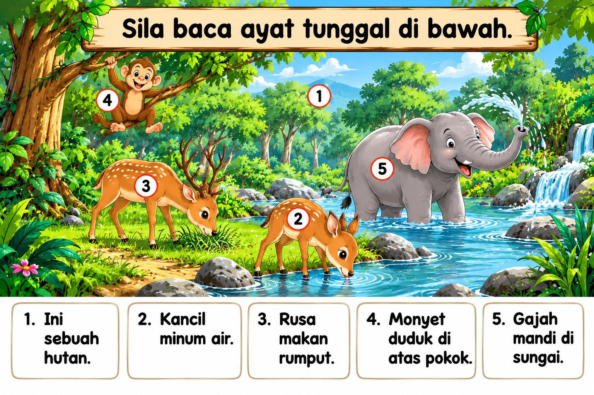
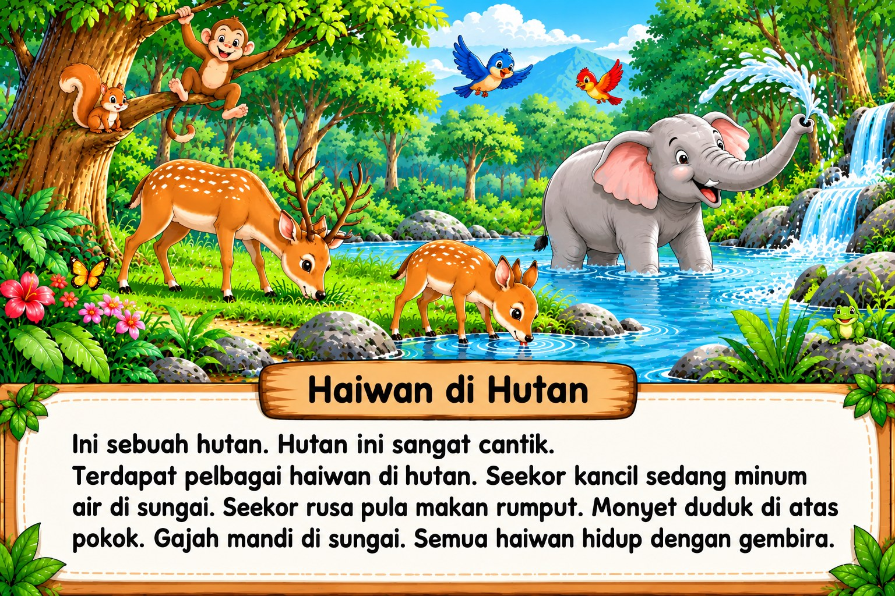

Sila baca ayat tunggal di bawah.

1 Ini sebuah hutan.
2 Kancil minum air.
3 Rusa makan rumput.
4 Monyet duduk di atas pokok.
5 Gajah mandi di sungai.
Rakaman Bacaan: Sila rakam suara atau video anda semasa membaca.
Rakam Audio
Rakam Video
👩🏫 Bahagian Semakan & Rekod Guru

Haiwan di Hutan
Ini sebuah hutan. Hutan ini sangat cantik. Terdapat pelbagai haiwan di hutan. Seekor kancil sedang minum air di sungai. Seekor rusa pula makan rumput. Monyet duduk di atas pokok. Gajah mandi di sungai. Semua haiwan hidup dengan gembira.
Rakaman Cerita: Sila rakam suara atau video anda semasa membaca.
Rakam Audio
Rakam Video
👩🏫 Bahagian Semakan & Rekod Guru
📋 Senarai Keseluruhan Rekod Murid
Berikut adalah senarai rekod bacaan dan semakan guru yang telah disimpan di dalam pelayar web ini:
| Modul | Nama Murid | Nama Guru | Status Prestasi | Tarikh/Masa | Tindakan |
|---|
Tiada rekod tersimpan lagi.